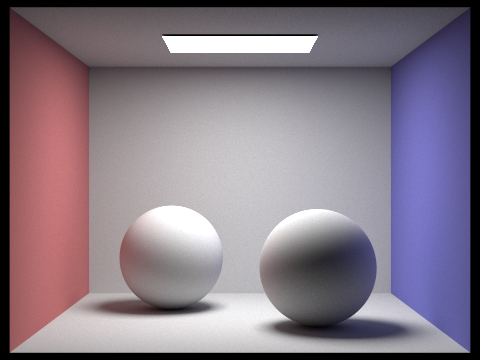
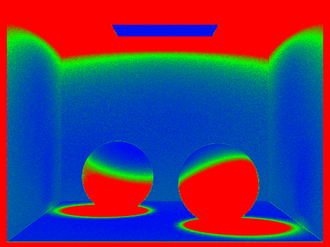

Overview
In this homework, I implemented the core functionality of a physically-based renderer with a pathtracing algorithm. I checked for scene intersections, implemented a bounding volume hierarchy (BVH) algorithm to speed up ray intersection tests, implemented full global illumination with indirect lighting effects, and adaptive sampling. I also compared the results of different techniques on various scenes.
Part 1: Ray Generation and Scene Intersection (20 Points)
Walk through the ray generation and primitive intersection parts of the rendering pipeline.
To generate the ray given x- and y-coordinates of the ray sample in the view plane, I first define the bottom-left
and top-right coordinates as (-tan(hFov/2), -tan(vFov/2), -1) and (tan(hFov/2), tan(vFov/2), -1), respectively
(where hFov and vFov are in radians here).
Then, I interpolate between these two points using the x- and y-coordinates of the ray sample to get the ray
direction in camera coordinates. After converting to world coordinates and normalizing, I create a ray with the
origin at the camera position and the direction as the interpolated direction. This ray is returned after
clipping t-values.
For raytrace_pixel(x, y), I first check if we only had one camera ray per pixel. If so, I normalize x and y,
generate a ray in the center of that pixel, and return est_radiance_global_illumination(ray). If we have more
than one camera ray per pixel, I loop through the number of samples and generate a ray for each sample. Then, I
sum the radiance for each ray and divide by the number of samples to get the average radiance.
My implementation of the triangle intersection algorithm is as follows: If the ray is parallel to the triangle,
there is no intersection. Otherwise, we use the Moller Trumbore algorithm to find the intersection point and t. If
either the intersection point or t-value is outside our bounds, there is no intersection.
By this point, we know that there is an intersection with this triangle, so we interpolate between the three
normal vectors of the vertices of the triangle to get the normal at the intersection point. We then negate the
normal if the dot product of the ray direction and the normal is positive. Finally, we set the instance
variables of the intersection object to the appropriate values and return true.
For sphere intersection I follow the algorithm from the slides, calculating a, b, and c terms of the sphere
intersection quadratic. If the discriminant is negative or the t-values are outside the bounds, there is no
valid intersection. Otherwise, I calculate the normal vector at the intersection point and set the instance
variables of the intersection object to the appropriate values before returning true.
Show images with normal shading for a few small .dae files.
|
|
|
|
Part 2: Bounding Volume Hierarchy (20 Points)
Walk through your BVH construction algorithm. Explain the heuristic you chose for picking the splitting point.
My BVH construction algorithm recursively calls itself on the left and right subtrees of the current node. Within each call, I first find the overall bounding box of the primitives in the current node, and decide which axis to split on based on the longest axis of the bounding box. I then sort the primitives based on the centroid along that axis and split the primitives into two groups. I then make recursive calls on these splits. The base case is when the number of primitives in the current node is less than or equal to the max_leaf_size.
Show images with normal shading for a few large .dae files that you can only render with BVH acceleration.
|
|
|
|
Compare rendering times on a few scenes with moderately complex geometries with and without BVH acceleration. Present your results in a one-paragraph analysis.
With BVH acceleration:
Beetle: 0.1995s
Cow: 0.3037s
Teapot: 0.3359s
Beetle: 70.2900s
Cow: 56.9874s
Teapot: 25.9308s
Rendering times for the scenes with BVH acceleration are significantly faster than those without because we can disregard large portions of the scene that do not intersect with the ray, reducing the number of intersection tests. This speedup is especially noticeable in the beetle and cow scenes. The teapot scene also shows a significant improvement in rendering time with BVH acceleration, although the difference is not as drastic as the other two scenes. Overall, I can see how BVH acceleration turns scenes that are almost intractable to render into ones that can be rendered in a fraction of a second.
Part 3: Direct Illumination (20 Points)
Walk through both implementations of the direct lighting function.
In estimate_direct_lighting_hemisphere, we loop through the number of samples and first sample a random vector w_in from the unit hemisphere and evaluate the BSDF with (w_in, w_out) as inputs to get reflectance. I then cast a ray with w_in as the new direction in world space and check if this ray intersects with anything. If there is an intersection, I accumulate the light emission and return the averaged emission value over num_samples.
In estimate_direct_lighting_importance, I loop over the lights in the scene and sample a direction from the light source, getting its emitted radiance. Then, with the intersection point and the direction from the light, I cast a ray and check that it doesn't intersect with anything (if there is an intersection, I ignore the sample). I accumulate the light emissions of the remaining samples, divide (f * intensity) by the pdf and ns_area_light (number of samples per area light source) to get the final value.
Show some images rendered with both implementations of the direct lighting function.
| Uniform Hemisphere Sampling | Light Sampling |
|---|---|
|
|
|
|
|
|
Focus on one particular scene with at least one area light and compare the noise levels in soft shadows when rendering with 1, 4, 16, and 64 light rays (the -l flag) and with 1 sample per pixel (the -s flag) using light sampling, not uniform hemisphere sampling.
|
|
|
|
|
|
In this grid of figures, I am rendering the CBbunny.dae scene with various light rays. As the number of light rays increases, the noise in the soft shadows decreases until it is unoticeable with 64 light rays. This is because we reduce variance in the soft shadows when sampling more points on the light source by increasing the probability that enough shadow rays hit the light.
Compare the results between uniform hemisphere sampling and lighting sampling in a one-paragraph analysis.
Uniform hemisphere sampling is a noisier technique (as can be seen in above images) because it is less efficient at sampling the light source; even if we were to end up with the same scene given enough sampling density, it would take many more light rays to get there. On the other hand, light sampling is more efficient and thus produces less noise with the same parameters.
Part 4: Global Illumination (20 Points)
Walk through your implementation of the indirect lighting function.
My implementation of the indirect lighting function works as follows: First, I sample the BSDF to get the reflectance and the new direction w_in (converted to world coordinates). I then cast a ray with the new direction and check if it intersects with anything. If there is an intersection and we move past the Russian roulette (coin flip with p=0.7), I get the radiance from indirect bounces with a recursive call to at_least_one_bounce_radiance, accumulate that value, and return the final radiance as the sampled BSDF * radiance * cos(w_in) / pdf / 0.7.
Show some images rendered with global (direct and indirect) illumination. Use 1024 samples per pixel.
|
|
|

|

|
Pick one scene and compare rendered views first with only direct illumination, then only indirect illumination. Use 1024 samples per pixel. (You will have to edit PathTracer::at_least_one_bounce_radiance(...) in your code to generate these views.)
|
|
|
As seen above, the lighting is not as realistic with only direct illumination. The indirect, full global illumination adds depth and realism, especially in the shadows and areas not directly lit by the light source.
For CBbunny.dae, compare rendered views with max_ray_depth set to 0, 1, 2, 3, and 100 (the -m flag). Use 1024 samples per pixel.
|
|
|
|
|
|
|
|
As the max_ray_depth increases, we get brighter images because more light bounces are allowed before terminating the ray.
Pick one scene and compare rendered views with various sample-per-pixel rates, including at least 1, 2, 4, 8, 16, 64, and 1024. Use 4 light rays.

|
|
|
|
|
|
|
|
|
|
As the number of samples per pixel increases, we reduce noise because higher sample rate means that we get a more accurate estimate of radiance at each pixel.
Part 5: Adaptive Sampling (20 Points)
Explain adaptive sampling. Walk through your implementation of the adaptive sampling.
Adaptive sampling is a technique that allows us to concentrate our sampling efforts in more difficult parts of the image. This works by detecting whether each pixel has converged (i.e. whether we can stop tracing more rays). My algorithm work as follows: First, after every samplesPerBatch number of pixels, I calculate mean and standard deviation of the batch radiance. Then, I check whether (1.96 * std / sqrt(nSamples) < maxTolerance * mean. If this condition is met, the pixel is converged and I stop tracing more rays for that pixel. I then continue tracing rays for the rest of the pixels until all pixels are converged.
Pick two scenes and render them with at least 2048 samples per pixel. Show a good sampling rate image with clearly visible differences in sampling rate over various regions and pixels. Include both your sample rate image, which shows your how your adaptive sampling changes depending on which part of the image you are rendering, and your noise-free rendered result. Use 1 sample per light and at least 5 for max ray depth.
|
|

|
|

|

|